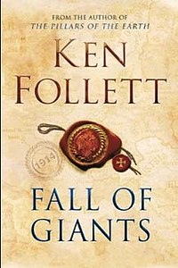
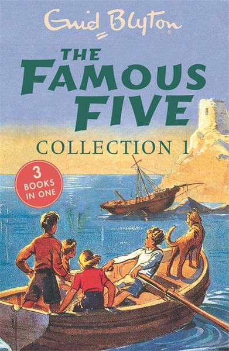
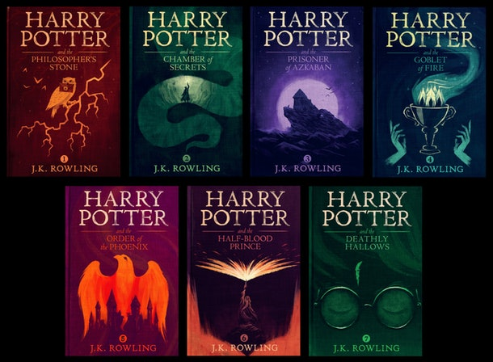
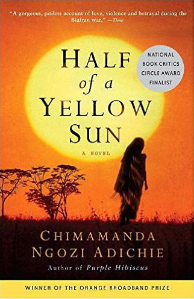
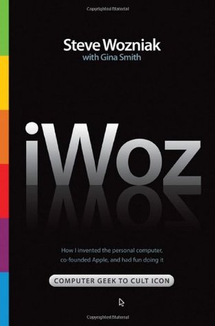
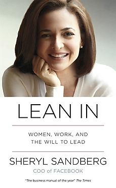
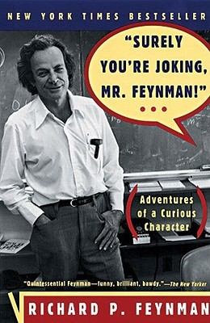
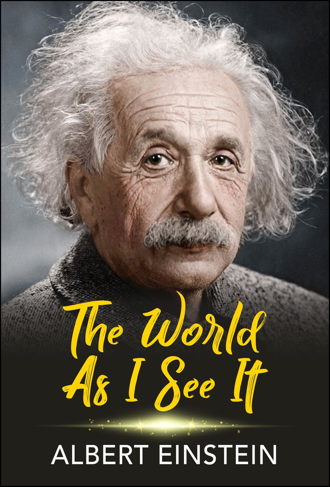
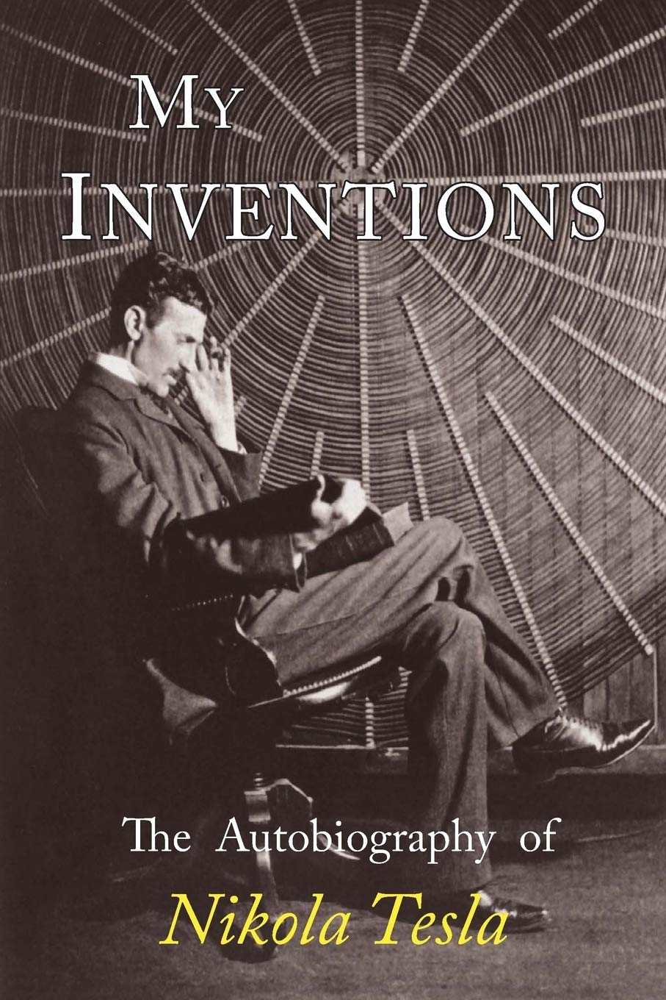

Books
I am an avid reader, a habit I have cultivated since as far back as I can remember. Allow me to share with you, some of my favourite reads.
Fiction

I read this book just as I was exiting my teen years,and I strongly felt that this book accurately depicts what goes on in a teenager's mind.

This, and Ken Follet's other works, remain the best historical fiction books that I've ever read.

This collection of adventure books rocked my childhood!!

I believe that these books were the epitomy of creative writing. I still enjoy reading Harry Potter to date, 10 years after my first read.
African Literature

A man of the People - Chinua Achebe

Half of a Yellow Sun - Chimamanda Ngozi Adichie

Anthills of the Savannah - Chinua Achebe
Shrine of Tears - Francis Imbuga
Americanah - Chimamanda Ngozi Adichie
Non Fiction

This book introduced me to the world of electronics, design engineering, programming and all wonderful things tech. Steve Wozniak is an incredible human being, whose story and innovations have shaped Silicon Valley as we know it today.

A book about feminism, leadership and the tech world, written by a phenomenal woman that I look up to.

I enjoyed following along the crazy adventures of a man I highly admire. In this book, I found out what a comical yet daring character he truly is

It is in reading this book that I realized how much my values align with those of Albert Einstein. His opinions on matters humanity are worth reading and contemplating over.

An autobiography of Nikola Tesla, one of the greatest inventors of all time!
Music
Unfortunately, as far as I know, I am musically untalented. I can not carry a tune to save my life!! However, I do listen to a very wide variety of music, cutting across genres and generations. Here as some of my favourite playlists.
Poetry
Some of my favourite poems.
The Red Wheelbarrow - William Carlos WIlliams
so much depends upon
a red wheelbarrow
glazed with rainwater
beside the white chickens
All the World's a stage - William Shakespeare
All the world’s a stage, And all the men and women merely players; They have their exits and their entrances; And one man in his time plays many parts, His acts being seven ages. At first the infant, Mewling and puking in the nurse’s arms; And then the whining school-boy, with his satchel And shining morning face, creeping like snail Unwillingly to school. And then the lover, Sighing like furnace, with a woeful ballad Made to his mistress’ eyebrow. Then a soldier, Full of strange oaths, and bearded like the pard, Jealous in honour, sudden and quick in quarrel, Seeking the bubble reputation Even in the cannon’s mouth. And then the justice, In fair round belly with good capon lin’d, With eyes severe and beard of formal cut, Full of wise saws and modern instances; And so he plays his part. The sixth age shifts Into the lean and slipper’d pantaloon, With spectacles on nose and pouch on side; His youthful hose, well sav’d, a world too wide For his shrunk shank; and his big manly voice, Turning again toward childish treble, pipes And whistles in his sound. Last scene of all, That ends this strange eventful history, Is second childishness and mere oblivion; Sans teeth, sans eyes, sans taste, sans everything.
The road not taken - Robert Frost
Two roads diverged in a yellow wood, And sorry I could not travel both And be one traveler, long I stood And looked down one as far as I could To where it bent in the undergrowth;
Then took the other, as just as fair, And having perhaps the better claim, Because it was grassy and wanted wear; Though as for that the passing there Had worn them really about the same,
And both that morning equally lay In leaves no step had trodden black. Oh, I kept the first for another day! Yet knowing how way leads on to way, I doubted if I should ever come back.
I shall be telling this with a sigh Somewhere ages and ages hence: Two roads diverged in a wood, and I— I took the one less traveled by, And that has made all the difference.
You Foolish Men - Sor Juana Inés de la Cruz
You foolish men who lay the guilt on women, not seeing you're the cause of the very thing you blame;
if you invite their disdain with measureless desire why wish they well behave if you incite to ill.
You fight their stubbornness, then, weightily, you say it was their lightness when it was your guile.
In all your crazy shows you act just like a child who plays the bogeyman of which he's then afraid.
With foolish arrogance you hope to find a Thais in her you court, but a Lucretia when you've possessed her.
What kind of mind is odder than his who mists a mirror and then complains that it's not clear.
Their favour and disdain you hold in equal state, if they mistreat, you complain, you mock if they treat you well.
No woman wins esteem of you: the most modest is ungrateful if she refuses to admit you; yet if she does, she's loose.
You always are so foolish your censure is unfair; one you blame for cruelty the other for being easy.
What must be her temper who offends when she's ungrateful and wearies when compliant?
But with the anger and the grief that your pleasure tells good luck to her who doesn't love you and you go on and complain.
Your lover's moans give wings to women's liberty: and having made them bad, you want to find them good.
Who has embraced the greater blame in passion? She who, solicited, falls, or he who, fallen, pleads?
Who is more to blame, though either should do wrong? She who sins for pay or he who pays to sin?
Why be outraged at the guilt that is of your own doing? Have them as you make them or make them what you will.
Leave off your wooing and then, with greater cause, you can blame the passion of her who comes to court?
Patent is your arrogance that fights with many weapons since in promise and insistence you join world, flesh and devil.